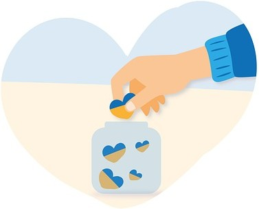

CNPJ: 52.805.931/0001-60
Banco: Nome do Banco
Agência: 0001
Conta: 6492163-0
Instituição: 403 - Cora SCFI
Nome da empresa: Instituo Pescador Abdon Gomes da Silva
CNPJ: 52.805.931/0001-60

Aceitamos doações de alimentos, produtos de higiene, cestas básicas, materiais escolares e diversos outros itens. Distribuímos essas doações para a comunidade costeira e assentamentos, tanto durante nossas ações e eventos quanto através de entregas porta a porta para quem mais precisa.
Entre em contato com a gente e saiba como contribuir!